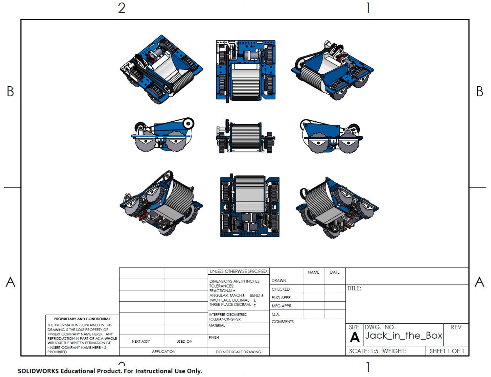
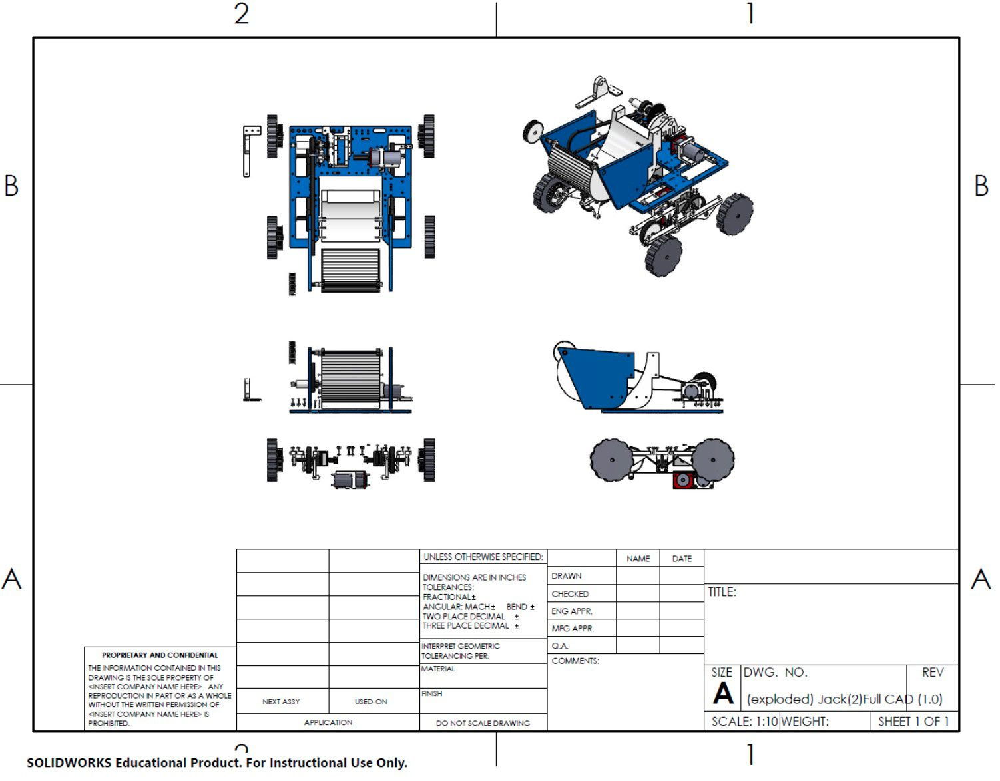
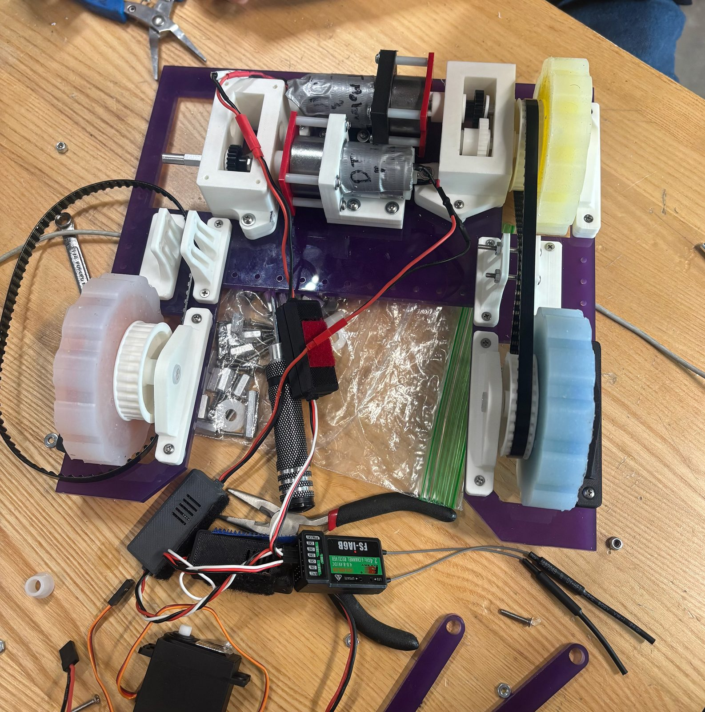

Turf Wars Robot — Sooper Scooper 5000




Overview
Designed and built as part of Harvard's introductory mechanical engineering course, this project challenged teams to design, analyse, and fabricate a remote-controlled robot for a structured arena competition within strict constraints on size, materials, actuators, and manufacturing processes.
My Contributions
- Performed drivetrain physics calculations including gear ratio selection and torque analysis
- Conducted shaft stress analysis on the 6061 aluminium shafts used for construction
- Designed components for the robot using SolidWorks
- Manufactured the aluminium shafts on the lathe
- Contributed to design iteration and bill of materials across three concept generations
Design & Outcome
Our solution integrated three engineering functions — object intake, storage, and scoring deposit — into a single continuous 360° rotational mechanism driven by one motor and shaft. Rather than designing separate subsystems for each task, we prioritised mechanical simplicity as a prerequisite for reliability: fewer moving parts, fewer failure points, faster cycle times. This simple design was extremely effective in practice, with its fast cycle time and reliable design helping our team win the 'Turf Wars' competition.
Manufacturing spanned laser cutting, 3D printing, aluminium lathe work, and belt-drive assembly. The robot performed reliably across all competition rounds, validating a simplicity-first design philosophy under real operating conditions.